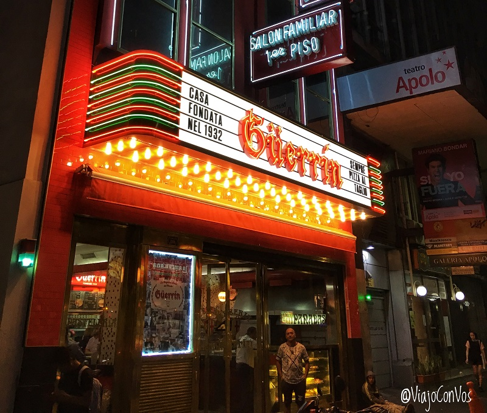
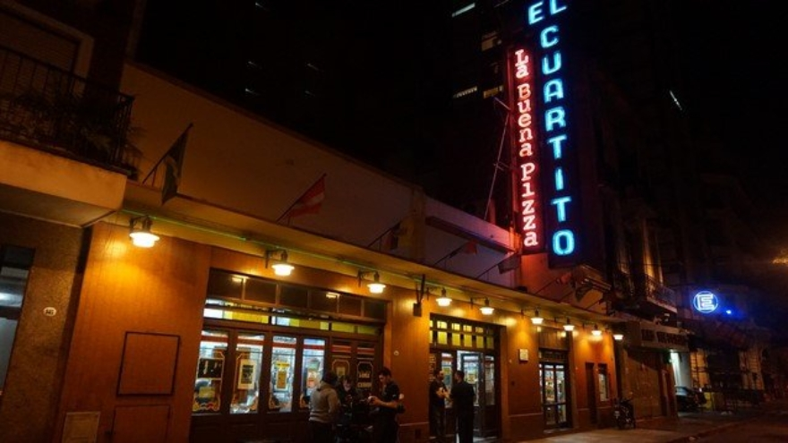
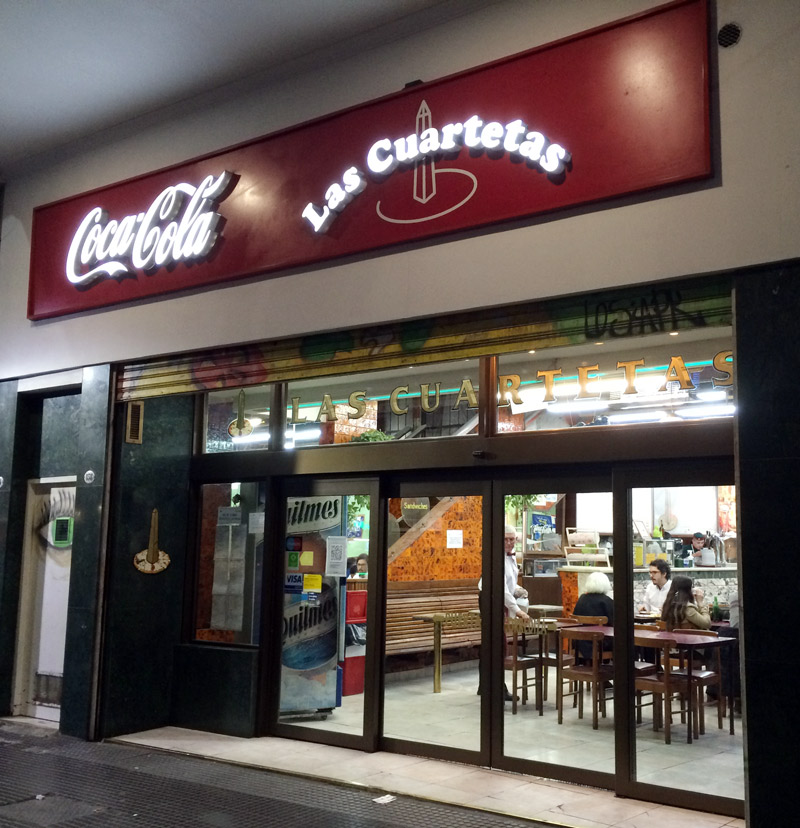
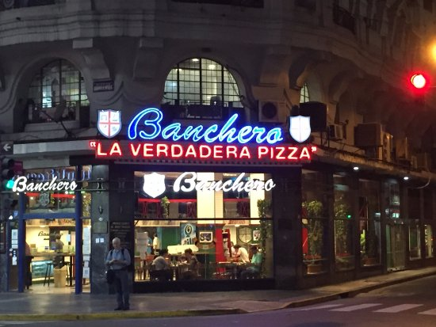
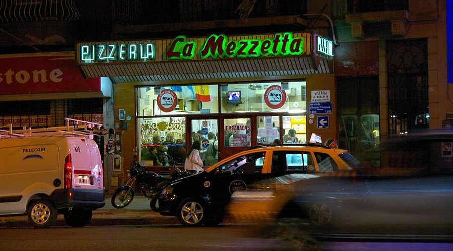
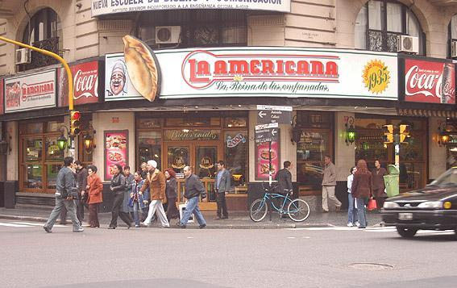
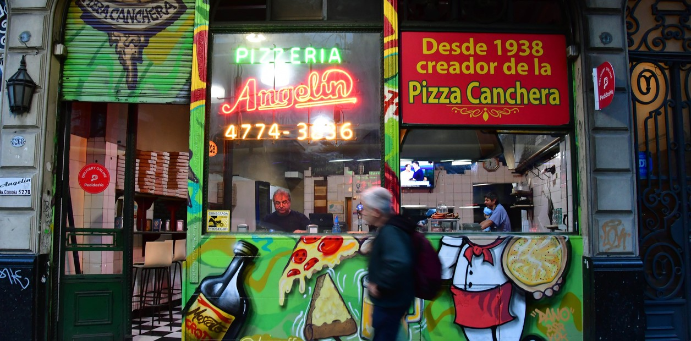
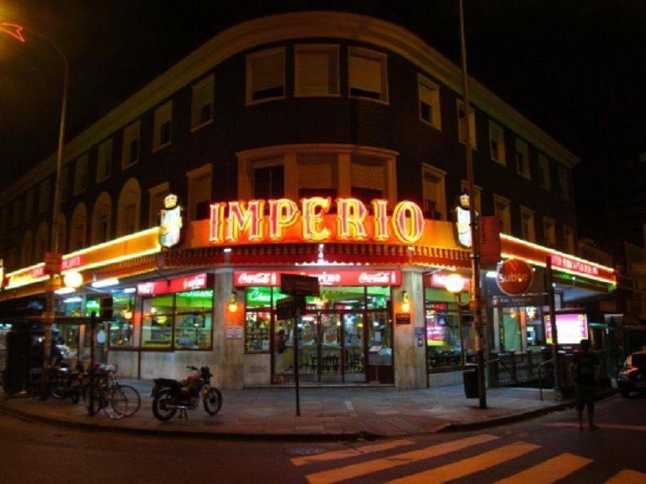
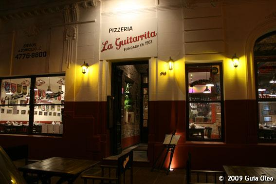

Güerrin
Fundada en 1932 sobre la emblemática Avenida Corrientes, Güerrin es una de las pizzerías más
legendarias de Buenos Aires. Con su horno a leña y su estilo bien al molde, es famosa por su
fugazzeta con mucho queso y su pizza de muzzarella crocante.

El Cuartito
Desde 1934, El Cuartito conserva un ambiente tradicional con paredes llenas de fotos deportivas.
Su fugazzeta rellena y la pizza con jamón y morrones son imperdibles.

Las Cuartetas
Inaugurada en 1932, es otra joya de la Avenida Corrientes. Se destaca por su pizza al molde con
abundante muzzarella y su ambiente bullicioso, perfecto para una noche teatral.

Banchero
Fundada en 1932 en el barrio de La Boca, Banchero es conocida como la creadora de la fugazza con
queso. Su tradición sigue viva con recetas caseras y porciones generosas.

La Mezzetta
Ubicada en Chacarita, es famosa por su fugazzeta rellena y su pizza de muzzarella servida de
parado. Un clásico sin mesas, solo mostrador y sabor auténtico.

La Americana
Sobre Av. Callao, desde 1935, La Americana se volvió famosa por combinar empanadas y pizzas. Su
especialidad: muzzarella con jamón cocido y morrón, bien al molde.

Angelín
Ubicada en Villa Crespo, esta pizzería se autodenomina la “creadora de la pizza canchera”. Su
masa finita y crocante, con salsa intensa, la hace única.

Imperio
En la esquina de Federico Lacroze y Cabildo, Imperio es el corazón pizzero de Colegiales. Su
pizza de muzzarella al molde y sus empanadas de carne cortada a cuchillo son legendarias.

La Guitarrita
Con varias sucursales, esta pizzería se hizo conocida por su ambiente bohemio y su pizza fina, de
estilo más moderno pero con base porteña. Recomendada: la de rúcula y jamón crudo.

El Fortín
En Villa Luro desde 1962, El Fortín ofrece porciones abundantes y fieles a la tradición. Su
fugazzeta es una de las más queridas por los vecinos de la zona oeste de la ciudad.